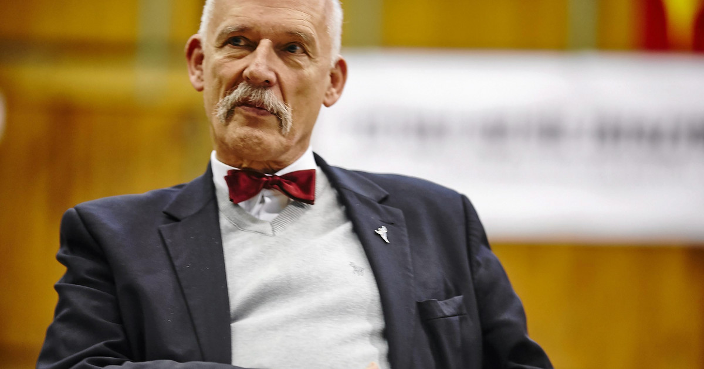

Koalicja
Odnowy
Rzeczypospolitej
Wolność
I
Nadzieji
Janusz Ryszard Korwin-Mikke (ur. 27 października 1942 w Warszawie) – polski polityk i publicysta.
Mistrz krajowy w brydżu. Założyciel i prezes Unii Polityki Realnej (1990–1997, 1999–2002),
Wolności i Praworządności(2009–2011), Kongresu Nowej Prawicy (2011–2015) i partii KORWiN (od 2015),
a także jeden z liderów federacyjnej partii Konfederacja Wolność i Niepodległość (od 2019).
Poseł na Sejm I i IX kadencji (1991–1993, od 2019), deputowany do Parlamentu Europejskiego VIII kadencji (2014–2018).
Kandydat na urząd prezydenta RP w wyborach w 1995, 2000, 2005, 2010 i 2015.